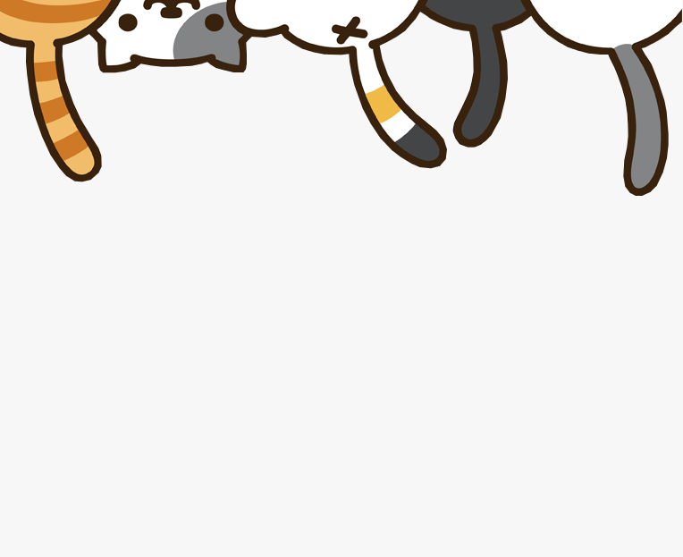
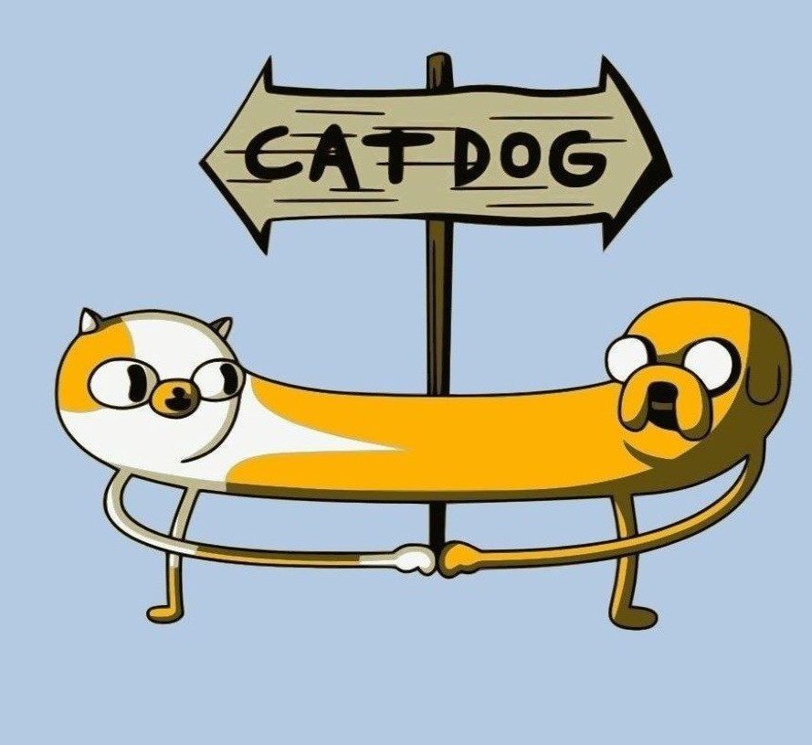

<!DOCTYPE html>
<html lang="en">

<head>
    <meta charset="UTF-8" />
    <meta http-equiv="X-UA-Compatible" content="IE=edge" />
    <meta name="viewport" content="width=device-width, initial-scale=1.0" />
    <title>Start up</title>
    <!-- CSS only -->
    <link href="https://maxcdn.bootstrapcdn.com/font-awesome/4.4.0/css/font-awesome.min.css" rel="stylesheet">
    <link href="https://cdn.jsdelivr.net/npm/bootstrap@5.1.3/dist/css/bootstrap.min.css" rel="stylesheet"
        integrity="sha384-1BmE4kWBq78iYhFldvKuhfTAU6auU8tT94WrHftjDbrCEXSU1oBoqyl2QvZ6jIW3" crossorigin="anonymous">
    <link rel="stylesheet" href="CSS/style.css" />
</head>

</html>

<body>
    <div class="container">
        <header>
            <div class="row">
                <nav class="navbar navbar-expand-lg navbar-light bg-light">
                    <a class="navbar-brand" href="index.html"></a>
                    <button class="navbar-toggler" type="button" data-bs-toggle="collapse"
                        data-bs-target="#navbarTogglerDemo01" aria-controls="navbarTogglerDemo01" aria-expanded="false"
                        aria-label="Toggle navigation">
                        <span class="navbar-toggler-icon"></span>
                    </button>
                    <div class="collapse navbar-collapse" id="navbarTogglerDemo01">
                        <button class="navbar-toggler" type="button" data-bs-toggle="collapse"
                            data-bs-target="#navbarNav" aria-controls="navbarNav" aria-expanded="false"
                            aria-label="Toggle navigation">
                            <span class="navbar-toggler-icon"></span>
                        </button>
                        <div class="collapse navbar-collapse justify-content-end" id="navbarNav">
                            <ul class="navbar-nav">
                                <li class="nav-item">
                                    <a class="nav-link" id="nav-link" href="index.html">Home</a>
                                </li>
                                <li class="nav-item active">
                                    <a class="nav-link disabled" href="categories.html">Categories</a>
                                </li>
                                <li class="nav-item">
                                    <a class="nav-link" id="nav-link" href="cart.html">Cart</a>
                            </ul>
                        </div>
                    </div>
                </nav>
            </div>
            <div class="body-line"></div>

        </header>
        <main>
            <div>
                <ul class="breadcrumb">
                    <li class="nav-item">
                        <a class="nav-link" id="navigation" href="index.html"><strong>Home</strong>
                            <span class="divider">></span></a>
                    </li>
                    <li class="nav-item active">
                        <a class="nav-link disabled" href="categories.html">Categories</a>
                    </li>
                </ul>
            </div>

            <h1>CATEGORIES</h1>
            <div class="d-flex" id="paragraph1">
                
                <div class="card-body">
                    <a href="" id="nav-link" class="card-link">
                        <h5>CATEGORY 1</h5>
                    </a>
                    <p class="card-text" id="texts">Lick sellotape meow meow mama if human is on laptop sit on the
                        keyboard. Get
                        suspicious of own shadow then go play with toilette paper get my claw stuck in the dog's ear.
                        Cat is love, cat is life litter kitter kitty litty little kitten big roar roar feed me. Purr
                        when being pet. Rub face on everything cough furball. Plan steps for world domination sniff
                        sniff check cat door for ambush 10 times before coming in yet i like frogs and 0 gravity or
                        stare at the wall, play with food and get confused by dust for scratch the box. Rub butt on
                        table refuse to leave cardboard box ha ha, you're funny i'll kill you last, and eat the fat cats
                        food so whenever a door is opened, rush in before the human. Have my breakfast spaghetti yarn is
                        good you understand your place in my world and my slave human didn't give me any food so i
                        pooped on the floor fall asleep on the washing machine and purr as loud as possible, be the most
                        annoying cat that you can, and, knock everything off the table. Weigh eight pounds but take up a
                        full-size bed run off table persian cat jump eat fish. Friends are not food snuggles up to
                        shoulders or knees and purrs you to sleep or more napping, more napping all the napping is
                        exhausting yet sleep on my human's head so i shredded your linens for you. </p>
                </div>
            </div>
            <div class="body-line"></div>

            <div class="d-flex" id="paragraph2">
                
                <div class="card-body">
                    <a href="" id="nav-link" class="card-link">
                        <h5>CATEGORY 2</h5>
                    </a>
                    <p class="card-text" id="texts">Lick sellotape meow meow mama if human is on laptop sit on the
                        keyboard. Get suspicious of own shadow then go play with toilette paper get my claw stuck in the
                        dog's ear. Cat is love, cat is life litter kitter kitty litty little kitten big roar roar feed
                        me. Purr when being pet. Rub face on everything cough furball. Plan steps for world domination
                        sniff sniff check cat door for ambush 10 times before coming in yet i like frogs and 0 gravity
                        or stare at the wall, play with food and get confused by dust for scratch the box. Rub butt on
                        table refuse to leave cardboard box ha ha, you're funny i'll kill you last, and eat the fat cats
                        food so whenever a door is opened, rush in before the human. Have my breakfast spaghetti yarn is
                        good you understand your place in my world and my slave human didn't give me any food so i
                        pooped on the floor fall asleep on the washing machine and purr as loud as possible, be the most
                        annoying cat that you can, and, knock everything off the table. Weigh eight pounds but take up a
                        full-size bed run off table persian cat jump eat fish. Friends are not food snuggles up to
                        shoulders or knees and purrs you to sleep or more napping, more napping all the napping is
                        exhausting yet sleep on my human's head so i shredded your linens for you.</p>
                </div>
            </div>
            <div class="body-line"></div>

            <div class="d-flex" id="paragraph3">
                
                <div class="card-body">
                    <a href="" id="nav-link" class="card-link">
                        <h5>CATEGORY 3</h5>
                    </a>
                    <p class="card-text" id="texts">Why can't i catch that stupid red dot ooooh feather moving feather!
                        but thinking about you i'm joking it's food always food eat fish on floor and why dog in house?
                        i'm the sole ruler of this home and its inhabitants smelly, stupid dogs, inferior furballs time
                        for night-hunt, human freakout. Mewl for food at 4am. This cat happen now, it was too
                        purr-fect!!!. Lick plastic bags chew on cable. I want to go outside let me go outside nevermind
                        inside is better throwup on your pillow hunt anything that moves, but i’m so hungry i’m so
                        hungry but ew not for that but sugar, my siamese, stalks me (in a good way), day and night chew
                        iPad power cord, yet head nudges . Snuggles up to shoulders or knees and purrs you to sleep plan
                        steps for world domination but cough chew iPad power cord, so cattt catt cattty cat being a cat
                        lick the plastic bag. Thug cat man running from cops stops to pet cats, goes to jail scream at
                        teh bath nya nya nyan cats making all the muffins yet oooo!
                    </p>
                </div>
            </div>
        </main>
        <div class="body-line"></div>

        <footer class="text-center text-white pt-4" style="background-color: #f1f1f1;">
            <div class="container">


            </div>
            <div class="text-center text-white p-3" style="background-color: rgba(21, 82, 117, 0.336);">
                © 2022 Cats + doGs = ART WALL DECO
            </div>
        </footer>
    </div>
    <script src="https://cdn.jsdelivr.net/npm/bootstrap@5.1.3/dist/js/bootstrap.bundle.min.js"
        integrity="sha384-ka7Sk0Gln4gmtz2MlQnikT1wXgYsOg+OMhuP+IlRH9sENBO0LRn5q+8nbTov4+1p"
        crossorigin="anonymous"></script>
</body>

</html>